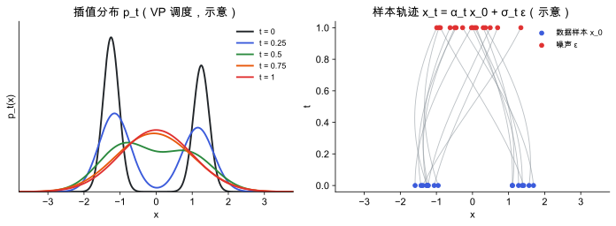

扩散模型与流匹配
把加噪去噪、反向 SDE 与概率流 ODE、流匹配讲成同一条“从噪声沿路径运到数据”的思路，作为晶体生成模型里扩散类方法的数学底子。
完整推导还需要
- 对称性与等变性：生成器要等变
- 随机微分方程与布朗运动的基本概念
只是提示，不需要先读完才能往下看。
直觉直观解释
生成模型要把一个容易采样的分布（通常是标准高斯噪声）变成数据分布。扩散模型 (diffusion model) 和流匹配 (flow matching) 的共同思路是：先定义一条从数据到噪声的连接路径，再学沿着这条路径的“运动方向”；生成时从噪声出发，沿学到的方向反过来走回数据。
两者的区别在于“运动方向”是什么、路径怎么定：
- 扩散：把数据逐步加噪，每一步都加一点点；学的是每一步“噪声该去掉多少”，数学上等价于学对数密度的梯度，即 score $ \nabla_x \ln p_t(x) $。生成时用反向 SDE 或概率流 ODE 从大噪声积分回数据。
- 流匹配：直接规定数据点和噪声点之间的插值路径（常取直线），学的是沿路径的速度场。它不要求路径来自某个加噪过程，因此调度更自由。

| 符号 | 是什么 | 图里对应 |
|---|---|---|
| t | 连续时间，t=0 数据、t=1 噪声（本文的约定，可与常见论文反向） | 右图纵轴；左图各条曲线的标签 |
| x_0 | 数据样本 | 右图 t=0 处的蓝点 |
| \varepsilon | 标准高斯噪声样本 | 右图 t=1 处的红点 |
| \alpha_t, \sigma_t | 信号与噪声的插值系数，满足 \alpha_t^2 + \sigma_t^2 = 1（VP 调度） | 轨迹的横向位置 |
| p_t | 时刻 t 的边缘分布 | 左图曲线 |
定义与公式数学与推导
前向过程与插值形式
扩散的前向过程写成随机微分方程 (stochastic differential equation, SDE)：
其中 f(x,t) 是漂移项；g(t) 是扩散系数；W 是标准布朗运动。取 f(x,t) = -\tfrac12 \beta(t) x、g(t) = \sqrt{\beta(t)} 就是常用的 VP (variance preserving) 调度，\beta(t) 是噪声调度 (noise schedule)。
对线性 SDE，边缘分布可以写成插值形式：
其中 \alpha_t、\sigma_t 由 \beta(t) 积分得到；在 VP 调度下 \alpha_t^2 + \sigma_t^2 = 1，所以方差保持不变、信号逐渐被噪声淹没。这正是图中从双峰到单峰的机制。
score 与反向 SDE
要把过程倒过来，需要知道每个时刻的 score：
其中 p_t 是时刻 t 的边缘分布。给定 score，反向 SDE 是
其中 \bar W 是反向时间的布朗运动。把随机项去掉，得到概率流 ODE (probability flow ODE)：
它给出与反向 SDE 相同的边缘分布，但是确定性的：同一个噪声样本总走到同一个数据样本。采样器（Euler、Heun、高阶求解器）的选择就是在解这个 ODE。
怎么学 score：去噪目标
score 不知道，但可以用“预测噪声”来学。对上面的插值形式，有
所以训练一个网络 \varepsilon_\theta(x_t, t) 去预测噪声即可：
其中 \theta 是网络参数；期望对时间 t、数据 x_0 和噪声 \varepsilon 取。这就是 DDPM 的简化目标 [Ho et al. 2020]；把它写成连续时间、用 score 参数化，就是 score-based SDE 框架 [Song et al. 2021]。
流匹配
流匹配不走“先加噪再倒放”，而是直接指定插值：
其中 x_1 是噪声端样本（注意这里 t=0 数据、t=1 噪声，与上一节一致）。沿这条直线的速度是 x_1 - x_0，于是
其中 v_\theta 是速度场网络。更一般地，条件路径可以不是直线，只要边缘速度场等于条件速度场的期望，训练目标仍然有效；这就是条件流匹配 (conditional flow matching) [Lipman et al. 2023]。直线路径的好处是数值积分步数少。
在本研究线里的样子对应与边界
晶体结构不是向量，而是一个三元组：晶格矩阵 A、分数坐标 X、元素种类 H。把它喂给扩散或流匹配时要处理三件事：
- 周期性：坐标在环面上，距离要按最小像算；噪声和插值也要在周期或欧氏表示上定义一致。
- 对称等价：置换原子、换晶格基矢、按空间群操作，得到的都是同一个晶体（见 晶体对称性与空间群）。生成器如果把这些当成不同样本，训练信号会被稀释，评价也会失真。
- 等变性：整体旋转和平移不应改变生成分布的结构部分；噪声加在坐标上要按 E[3] 变换（见 对称性与等变性）。
本周雷达里的两条直接相关的工作：DSADiff 针对晶体 CSP 的数据结构做扩散改进，扩散树采样在推理阶段用树搜索提高晶体生成的命中率 arXiv:2611.22050、arXiv:2611.17462。晶体表示与评价的细节放在 晶体结构生成模型，这里只讲生成过程的数学。
常见坑对应与边界
- 调度的端点不匹配数据尺度：\sigma_t 在噪声端必须足够大，否则噪声分布没有覆盖数据；在数据端必须足够小，否则样本糊。不同调度（VP、VE、cosine）不能混着用同一个训练目标。
- 把 ODE 采样当似然：概率流 ODE 能算似然，但要加散度项；只用少量 Euler 步采样不代表似然准确。
- 用原子 RMSD 评价对称等价结构：不按空间群和置换去重，唯一性会被低估或高估（见 晶体结构相似度与去重）。
- 条件生成破坏等变性：把空间群编号直接拼进网络输入通常不行，要用不变量或等变条件。
- 训练时坐标尺度没归一化：晶格常数和分数坐标的量纲差几个数量级，噪声尺度要分开设。
检验自己对应与边界
参考资料
论文Ho et al. 2020
尚未实际查阅，目前只是拟查阅书目
论文Song et al. 2021
尚未实际查阅，目前只是拟查阅书目
论文Lipman et al. 2023
尚未实际查阅，目前只是拟查阅书目
分类机器学习 · 方法 · 研究线：晶体结构生成 · 状态：草稿